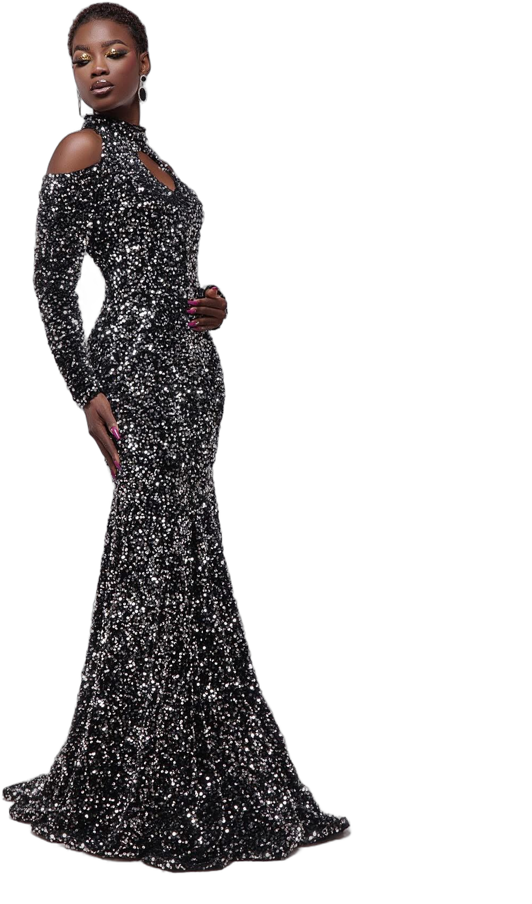
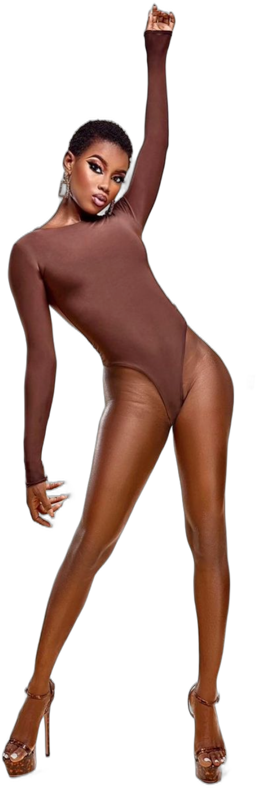

<!DOCTYPE html>
<html lang="fr"><head><meta charset="UTF-8">
<!-- Teaser « Alicia Kouadio » (13/11/2026) : bande-annonce de film de mode, d'après le scénario de la propriétaire —
     cinématique, sobre, sombre ; mystère (fragments, silhouette, ombre et lumière), découverte, RÉVÉLATION du nom,
     signature NEW FACE puis MAÎTRE AKESSE MODEL MANAGEMENT. Pas d'effets fantaisistes : fondus, lents travellings,
     lumière qui monte, silences respectés (musique creusée avant le nom : alicia/musique-teaser.wav).
     Voix « Victoria » de la propriétaire (voix-teaser.json, aligner-voix.py). Même contrat que film-alicia.html
     (window.rendre, EFFETS, MANQUES, PRET) : FILM=film-teaser-alicia.html NOM=alicia-teaser SONS=1 HD=1
     VOIX=… MUSIQUE=alicia/musique-teaser.wav IMAGES=… node fabrique-talons.js [vertical|large] -->
<!-- (13/11/2026) PREMIÈRE version du teaser, celle que la propriétaire garde pour publier (copie de film-teaser-alicia.html au commit 3f71b04). -->
<title>Teaser Alicia Kouadio</title>
<script src="timing-teaser-v1.js"></script>
<style>
@font-face { font-family: 'Cormorant Garamond'; font-weight: 500; src: url('../../assets/polices/cormorant-garamond-latin-500-normal.woff2'); }
@font-face { font-family: 'Cormorant Garamond'; font-weight: 500; src: url('../../assets/polices/cormorant-garamond-latin-ext-500-normal.woff2'); unicode-range: U+0100-024F; }
@font-face { font-family: 'Work Sans'; font-weight: 500; src: url('../../assets/polices/work-sans-latin-500-normal.woff2'); }
@font-face { font-family: 'Work Sans'; font-weight: 600; src: url('../../assets/polices/work-sans-latin-600-normal.woff2'); }
:root { --W: 1080px; --H: 1920px; --or: #D8B878; --ivoire: #F2ECE2; }
body.large { --W: 1920px; --H: 1080px; }
* { box-sizing: border-box; margin: 0; padding: 0; }
html, body { width: var(--W); height: var(--H); overflow: hidden; background: #000; color: var(--ivoire); font-family: 'Work Sans', sans-serif; }
#film { position: relative; width: var(--W); height: var(--H); overflow: hidden; background: #000; }
.plan { position: absolute; inset: 0; overflow: hidden; opacity: 0; background: #000; }
.img { position: absolute; background-repeat: no-repeat; will-change: transform; }
.abs { position: absolute; }
.serif { font-family: 'Cormorant Garamond', serif; font-weight: 500; }
.caps { font-weight: 500; text-transform: uppercase; letter-spacing: 0.5em; }
.lettre { display: inline-block; }
#grain { position: absolute; inset: -50%; z-index: 50; pointer-events: none; opacity: 0.09; mix-blend-mode: overlay; }
#vignette { position: absolute; inset: 0; z-index: 49; pointer-events: none; background: radial-gradient(ellipse at 50% 46%, rgba(0,0,0,0) 50%, rgba(0,0,0,0.7) 100%); }
#expo { position: absolute; inset: 0; z-index: 48; background: #fff; opacity: 0; pointer-events: none; }
/* bandes de cinéma (format horizontal seulement : 2,39:1) */
.bande { position: absolute; left: 0; right: 0; height: 138px; background: #000; z-index: 51; display: none; }
body.large .bande { display: block; }
</style></head>
<body>
<div id="film"><div id="plans"></div><div id="expo"></div><div id="vignette"></div><div class="bande" style="top:0"></div><div class="bande" style="bottom:0"></div><div id="grain"></div></div>
<script>
'use strict';
if (/format=large/.test(location.search)) document.body.classList.add('large');
const LARGE = document.body.classList.contains('large'), W = LARGE ? 1920 : 1080, H = LARGE ? 1080 : 1920;
const V = (v, l) => (LARGE ? l : v);
const T = window.T, MOTS = T.mots;
window.MANQUES = [];
const cl = (x) => (x < 0 ? 0 : x > 1 ? 1 : x);
const io = (x) => { x = cl(x); return x * x * (3 - 2 * x); };
const out = (x) => { x = cl(x); return 1 - Math.pow(1 - x, 3); };
const k = (t, a, d) => cl((t - a) / d);
const mix = (a, b, x) => a + (b - a) * x;
const norm = (m) => m.toLowerCase().normalize('NFD').replace(/[̀-ͯ]/g, '').replace(/[’']/g, "'");
function w(cle, mot) { const x = (MOTS[cle] || []).find((m) => norm(m[0]) === norm(mot)); if (!x) { window.MANQUES.push(cle + ':' + mot); return 0; } return x[1]; }
const photo = (n) => 'alicia/' + n + '.jpg';
const EFFETS = []; const son = (t, nom, vol) => EFFETS.push({ t: +Math.max(0, t).toFixed(3), son: 'a-' + nom, vol });
const racine = document.getElementById('plans');
const PLANS = [];
// un plan : de a à b, fondu d'entrée fi et de sortie fo (secondes) ; maj(t, q) l'anime
function plan(o) {
  const el = document.createElement('div'); el.className = 'plan'; el.innerHTML = o.html; racine.appendChild(el);
  o.el = el; o.q = (s) => el.querySelector(s); o.qa = (s) => [...el.querySelectorAll(s)]; o.fi = o.fi === undefined ? 0.8 : o.fi; o.fo = o.fo === undefined ? 0.8 : o.fo;
  PLANS.push(o); return o;
}
// image cadrée : photo n, largeur de l'image affichée (px), point visé (fx, fy en % de l'image) placé au centre du cadre (cx, cy en px)
function cadre(el, larg, fx, fy, cx, cy, ech, ratio) {
  const h = larg * ratio; el.style.width = larg + 'px'; el.style.height = h + 'px';
  el.style.left = (cx - larg * fx / 100) + 'px'; el.style.top = (cy - h * fy / 100) + 'px';
  el.style.transformOrigin = fx + '% ' + fy + '%'; el.style.transform = 'scale(' + ech + ')';
}
// rapports hauteur / largeur des photos de alicia/ (p01 : 1200 × 1800, les autres 1440 × 1800)
const R = { p01: 1.5, p05: 1.25, p07: 1.25, p08: 1.25, p09: 1.25, p11: 1.25, p12: 1.25, p13: 1.25 };
const img = (n, f) => '<div class="img" style="background:url(' + photo(n) + ') center/100% 100%;filter:' + (f || 'none') + '"></div>';

// 0. NOIR — un trait de lumière, une respiration
plan({ a: 0, b: 1.6, fi: 0.01, fo: 0.6,
  html: '<div class="abs" id="z-l" style="left:50%;top:50%;height:1px;width:0;background:linear-gradient(90deg,transparent,rgba(242,236,226,0.8),transparent)"></div>',
  maj: (t, p) => { const x = io(k(t, 0.2, 1.2)); p.q('#z-l').style.width = (x * 40) + '%'; p.q('#z-l').style.marginLeft = (-x * 20) + '%'; p.q('#z-l').style.opacity = String(1 - k(t, 1.1, 0.5)); } });
son(0, 'atmo', 0.35); son(0.5, 'respiration', 0.35);

// 1. « Tout commence par une présence » — très gros plan d'un œil, la lumière glisse et le découvre
plan({ a: 1.0, b: 4.6, fi: 1.0, fo: 0.7, html: img('p05', 'contrast(1.1) saturate(0.9) brightness(0.85)') + '<div class="abs" id="a-m" style="inset:0;background:linear-gradient(100deg,rgba(0,0,0,0.97) 0%,rgba(0,0,0,0.9) 25%,rgba(0,0,0,0) 48%,rgba(0,0,0,0) 62%,rgba(0,0,0,0.92) 88%)"></div>',
  maj: (t, p) => { cadre(p.q('.img'), V(4200, 4600), 58, 26.6, W / 2, H / 2, mix(1.0, 1.06, io(k(t, 1, 3.6))), R.p05); p.q('#a-m').style.transform = 'translateX(' + mix(-35, 25, io(k(t, 1, 3.4))) + '%) scale(1.6)'; } });

// 2. « Un regard » — ses yeux dans une fente, comme un plan de cinéma
plan({ a: w('fragments', 'regard') - 0.25, b: w('fragments', 'silhouette') + 0.1, fi: 0.5, fo: 0.45, html: img('p01', 'contrast(1.1) brightness(0.85) saturate(0.9)'),
  maj: (t, p) => { const a = p.a; cadre(p.q('.img'), V(3400, 3600), 50, 22, W / 2, H / 2, mix(1.0, 1.04, io(k(t, a, 2))), R.p01); p.el.style.clipPath = 'inset(' + V(43, 36) + '% 0 ' + V(43, 36) + '% 0)'; p.q('.img').style.marginLeft = mix(30, -30, io(k(t, a, 2))) + 'px'; } });

// 3. « une silhouette » — en ombre chinoise, bordée de lumière, sur un contre-jour
plan({ a: w('fragments', 'silhouette') - 0.2, b: w('fragments', 'énergie') + 0.1, fi: 0.5, fo: 0.45,
  html: '<div class="abs" style="inset:0;background:radial-gradient(ellipse 40% 50% at 50% 50%,rgba(150,120,80,0.45),rgba(0,0,0,0) 70%)"></div>' +
    '',
  maj: (t, p) => { const d = p.q('#s-d'); d.style.marginLeft = (-d.offsetWidth / 2) + 'px'; d.style.transform = 'translateX(' + mix(-40, 40, io(k(t, p.a, 1.8))) + 'px)'; } });

// 4. « une énergie » — un mouvement, une traînée, puis l'arrêt net
plan({ a: w('fragments', 'énergie') - 0.2, b: w('instant', 'mais') + 0.2, fi: 0.35, fo: 0.6,
  html: [0.12, 0.22, 1].map((o, i) => '').join(''),
  maj: (t, p) => { const x = out(k(t, p.a, 0.9)); p.qa('.e-d').forEach((d) => { const i = +d.dataset.i; d.style.marginLeft = (-d.offsetWidth / 2) + 'px'; d.style.transform = 'translateX(' + (mix(-260, 0, x) + (2 - i) * 70 * (1 - x)) + 'px)'; if (i < 2) d.style.opacity = String((i ? 0.22 : 0.12) * (1 - x)); }); } });
son(w('fragments', 'énergie') - 0.15, 'souffle-doux', 0.45);

// 5. « Mais parfois, il suffit d'un instant » — plan large, presque immobile, en noir et blanc
plan({ a: w('instant', 'mais') - 0.1, b: w('lumiere', 'pour') + 0.3, fi: 0.9, fo: 0.8, html: img('p11', 'grayscale(1) contrast(1.15) brightness(0.55)'),
  maj: (t, p) => { cadre(p.q('.img'), V(1950, 2100), 50, 42, W / 2, H / 2, mix(1.0, 1.05, io(k(t, p.a, 3.2))), R.p11); } });
son(w('instant', 'mais') - 0.4, 'respiration', 0.25);

// 6. « … un nouveau visage vient d'entrer dans la lumière » — le studio s'allume peu à peu, la couleur arrive
plan({ a: w('lumiere', 'pour') - 0.1, b: 15.35, fi: 0.8, fo: 0.3, html: img('p12', 'none'),
  maj: (t, p) => { const l = io(k(t, w('lumiere', 'visage') - 0.4, w('lumiere', 'lumière') + 0.3 - w('lumiere', 'visage') + 0.4));
    cadre(p.q('.img'), V(2000, 2050), 50, 45, W / 2, H / 2, mix(1.08, 1.0, io(k(t, p.a, 3.6))), R.p12);
    p.q('.img').style.filter = 'brightness(' + mix(0.14, 0.95, l) + ') saturate(' + mix(0.2, 1.05, l) + ') contrast(1.1)'; } });
son(w('lumiere', 'visage'), 'atmo', 0.4);

// 7. RÉVÉLATION — « Alicia Kouadio » : son visage en pleine lumière, son nom
const NOM = w('nom', 'alicia');
plan({ a: NOM - 0.02, b: w('newface', 'new') + 0.1, fi: 0.05, fo: 0.7,
  html: img('p01', 'contrast(1.06) saturate(1.04)') + '<div class="abs" style="inset:0;background:linear-gradient(180deg,rgba(0,0,0,0) 45%,rgba(0,0,0,0.82) 85%)"></div>' +
    '<div class="abs serif" id="n-nom" style="left:0;right:0;text-align:center;top:' + V(1330, 720) + 'px;font-size:' + V(92, 100) + 'px;line-height:1;white-space:nowrap">' + [...'ALICIA KOUADIO'].map((c) => '<span class="lettre">' + (c === ' ' ? '&nbsp;' : c) + '</span>').join('') + '</div>' +
    '<div class="abs" id="n-trait" style="left:50%;top:' + V(1480, 852) + 'px;width:' + V(460, 420) + 'px;height:1px;margin-left:' + V(-230, -210) + 'px;background:var(--or)"></div>' +
    '<div class="abs caps" id="n-infos" style="left:0;right:0;text-align:center;top:' + V(1520, 880) + 'px;font-size:' + V(26, 22) + 'px;color:var(--or)"><span id="n-taille">1,69 m</span></div>',
  maj: (t, p) => {
    cadre(p.q('.img'), V(2000, 2000), 50, V(30, 22), W / 2, V(860, 470), mix(1.06, 1.0, out(k(t, NOM, 5))), R.p01);
    p.qa('#n-nom .lettre').forEach((l, i) => { const x = k(t, NOM + 0.15 + i * 0.05, 1.1); l.style.opacity = String(out(x)); l.style.filter = 'blur(' + mix(12, 0, out(x)) + 'px)'; });
    p.q('#n-nom').style.letterSpacing = mix(V(0.2, 0.32), V(0.06, 0.12), out(k(t, NOM, 2.6))) + 'em';
    p.q('#n-trait').style.transform = 'scaleX(' + io(k(t, NOM + 0.9, 1.2)) + ')';
    p.q('#n-taille').style.opacity = String(out(k(t, w('infos', '1') - 0.1, 0.6)));
  } });
son(NOM - 0.05, 'revelation', 0.6); son(NOM, 'grave', 0.55);

// 8. NEW FACE — elle en pied, sur le noir
const NF = w('newface', 'new');
plan({ a: NF - 0.25, b: w('histoire', 'son') + 0.2, fi: 0.7, fo: 0.6,
  html: '<div class="abs" style="inset:0;background:radial-gradient(ellipse at 50% 40%,#1a1714,#000 70%)"></div>' +
    '' +
    '<div class="abs caps" id="f-t" style="left:0;right:0;text-align:center;top:' + V(1540, 862) + 'px;font-size:' + V(34, 26) + 'px;color:var(--ivoire)"><span style="display:inline-block;width:70px;height:1px;background:var(--or);vertical-align:middle;margin-right:30px"></span>New Face<span style="display:inline-block;width:70px;height:1px;background:var(--or);vertical-align:middle;margin-left:10px"></span></div>',
  maj: (t, p) => { const d = p.q('#f-d'); d.style.marginLeft = (-d.offsetWidth / 2 + V(0, 0)) + 'px'; d.style.transform = 'scale(' + mix(0.97, 1.02, io(k(t, p.a, 3))) + ')'; p.q('#f-t').style.opacity = String(out(k(t, NF, 0.9))); p.q('#f-t').style.letterSpacing = mix(0.8, 0.5, out(k(t, NF, 1.8))) + 'em'; } });
son(NF - 0.05, 'souffle-doux', 0.3);

// 9. « Son histoire ne fait que commencer » — trois plans qui se fondent
[['p08', 50, 22], ['p09', 52, 30], ['p07', 45, 35]].forEach(([n, fx, fy], i, l) => {
  const a = w('histoire', 'son') + i * 1.15;
  plan({ a, b: a + 1.7, fi: 0.6, fo: 0.6, html: img(n, 'contrast(1.08) brightness(0.86) saturate(0.95)'),
    maj: (t, p) => { cadre(p.q('.img'), V(1950 + i * 120, 1980), fx, fy, W / 2, H / 2, mix(1.0, 1.05, io(k(t, p.a, 1.7))), R[n]); p.q('.img').style.marginLeft = mix(i % 2 ? 30 : -30, i % 2 ? -30 : 30, io(k(t, p.a, 1.7))) + 'px'; } });
});

// 10. MAÎTRE AKESSE MODEL MANAGEMENT — le logo, sobre
const AG = w('agence', 'maître');
plan({ a: AG - 0.5, b: w('bientot', 'bientôt') + 0.1, fi: 0.8, fo: 0.7,
  html: '',
  maj: (t, p) => { p.q('#g-l').style.opacity = String(out(k(t, AG - 0.3, 1.2))); p.q('#g-l').style.transform = 'scale(' + mix(0.97, 1.0, out(k(t, AG - 0.3, 3))) + ')'; } });
son(AG - 0.1, 'grave', 0.35);

// 11. « Bientôt, vous comprendrez pourquoi il faudra retenir son nom » — son visage, mi-ombre mi-lumière
const BT = w('bientot', 'bientôt');
plan({ a: BT - 0.3, b: w('canaux', 'rendez-vous') + 0.3, fi: 0.9, fo: 0.8,
  html: img('p13', 'contrast(1.12) brightness(0.7) saturate(0.9)') + '<div class="abs" style="inset:0;background:linear-gradient(90deg,rgba(0,0,0,0.85),rgba(0,0,0,0) 55%)"></div>' +
    '<div class="abs serif" id="b-n" style="left:0;right:0;text-align:center;top:' + V(1500, 830) + 'px;font-size:' + V(64, 56) + 'px;letter-spacing:0.3em">ALICIA KOUADIO</div>',
  maj: (t, p) => { cadre(p.q('.img'), V(2400, 2300), 52, 34, W / 2, H / 2, mix(1.0, 1.07, io(k(t, p.a, 4.2))), R.p13); const x = k(t, w('bientot', 'retenir') - 0.1, 1.0); p.q('#b-n').style.opacity = String(out(x)); p.q('#b-n').style.filter = 'blur(' + mix(10, 0, out(x)) + 'px)'; } });
son(w('bientot', 'nom') - 0.1, 'souffle-doux', 0.25);

// 12. FIN — « Rendez-vous sur nos canaux digitaux » : les quatre réseaux, un par un, puis la signature
const CN = [['facebook', 'Facebook'], ['instagram', 'Instagram'], ['youtube', 'YouTube'], ['tiktok', 'TikTok']];
plan({ a: w('canaux', 'rendez-vous') - 0.2, b: T.duree + 1, fi: 1.0, fo: 0.01,
  html: '<div class="abs caps" id="c-b" style="left:0;right:0;text-align:center;top:' + V(620, 300) + 'px;font-size:' + V(30, 26) + 'px;color:var(--or)">Bientôt</div>' +
    '<div class="abs serif" id="c-n" style="left:0;right:0;text-align:center;top:' + V(690, 350) + 'px;font-size:' + V(96, 90) + 'px;letter-spacing:0.08em">Alicia Kouadio</div>' +
    '<div class="abs" style="left:0;right:0;top:' + V(880, 520) + 'px;display:flex;' + V('flex-direction:column;align-items:center;gap:26px', 'justify-content:center;gap:70px') + '">' + CN.map(([, l]) => '<div class="caps c-r" style="font-size:' + V(30, 24) + 'px;letter-spacing:0.42em">' + l + '</div>').join('') + '</div>' +
    '<div class="abs" id="c-h" style="left:0;right:0;text-align:center;top:' + V(1220, 610) + 'px;font:500 ' + V(28, 22) + 'px Work Sans;letter-spacing:0.12em;color:rgba(242,236,226,0.7)">@maitreakessemodelmanagement</div>' +
    '',
  maj: (t, p) => { const a = p.a;
    p.q('#c-b').style.opacity = String(out(k(t, a + 0.2, 1))); p.q('#c-n').style.opacity = String(out(k(t, a + 0.5, 1.2)));
    p.qa('.c-r').forEach((r, i) => { const x = k(t, w('canaux', CN[i][0]) - 0.15, 0.7); r.style.opacity = String(out(x)); r.style.transform = 'translateY(' + mix(14, 0, out(x)) + 'px)'; });
    p.q('#c-h').style.opacity = String(out(k(t, w('canaux', 'tiktok') + 0.5, 1))); p.q('#c-l').style.opacity = String(out(k(t, w('canaux', 'tiktok') + 0.9, 1.2)));
    // fondu au noir final
    p.el.style.filter = 'brightness(' + (1 - io(k(t, T.duree - 0.9, 0.9))) + ')'; } });
CN.forEach(([c]) => son(w('canaux', c) - 0.05, 'souffle-doux', 0.12));

// ---------- grain ----------
let graine = 7; const alea = () => { graine = (graine * 16807) % 2147483647; return graine / 2147483647; };
const g = document.createElement('canvas'); g.width = g.height = 256; const gx = g.getContext('2d'); const id = gx.createImageData(256, 256);
for (let i = 0; i < id.data.length; i += 4) { const v = alea() * 255; id.data[i] = id.data[i + 1] = id.data[i + 2] = v; id.data[i + 3] = 255; }
gx.putImageData(id, 0, 0); document.getElementById('grain').style.backgroundImage = 'url(' + g.toDataURL() + ')';
const expo = document.getElementById('expo');

window.rendre = (t) => {
  PLANS.forEach((p) => {
    if (t < p.a || t >= p.b) { p.el.style.opacity = 0; p.el.style.visibility = 'hidden'; return; }
    p.el.style.visibility = 'visible';
    p.el.style.opacity = String(io(k(t, p.a, p.fi)) * (1 - io(k(t, p.b - p.fo, p.fo))));
    p.maj(t, p);
  });
  // révélation : une brève surexposition, comme un flash de studio très doux
  expo.style.opacity = String(t >= NOM - 0.02 ? Math.max(0, 1 - (t - NOM + 0.02) / 0.45) * 0.55 : 0);
  document.getElementById('grain').style.transform = 'translate(' + ((Math.floor(t * 24) * 37) % 200 - 100) + 'px,' + ((Math.floor(t * 24) * 71) % 200 - 100) + 'px)';
};
window.EFFETS = EFFETS.sort((a, b) => a.t - b.t);
const SRC = ['alicia/d-p00.png', 'alicia/d-p06.png', '../../assets/logo-intro.png'].concat(['p01', 'p05', 'p07', 'p08', 'p09', 'p11', 'p12', 'p13'].map(photo));
window.PRET = Promise.all(SRC.map((u) => { const im = new Image(); im.src = u; return im.decode().catch(() => window.MANQUES.push('image ' + u)); })).then(() => document.fonts.ready);
const q = new URLSearchParams(location.search).get('t'); window.rendre(q ? +q : 0);
</script>
</body></html>
